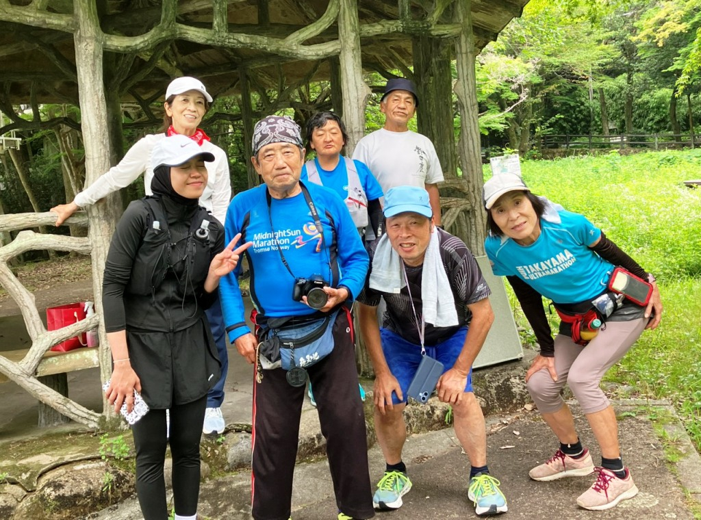

2026-07-04 05:03:06
2026年7月4日（土曜日）（場所：不老公園 天候：曇り 気温：25℃）（エイド担当：高井さん）
| No | 氏名 | 種目 | タイム | フル百 |
|---|---|---|---|---|
| 1 | 渡辺 和次 | 13km | 1:40:00 | 804 |
| 2 | 武藤 彰 | 12km | 3:27:17 | 593 |
| 3 | 竹内 弥富 | 21km | 4:10:00 | 647 |
| 4 | 石原 久行 | 11km | 2:10:00 | 520 |
| 5 | 河合 邦純 | 11km | 3:00:00 | 549 |
| 6 | 横幕 満美子 | フル | 6:21:29 | ー |
コメント（渡辺）
今日は曇り空で走り易い天候の中、6人の参加者で各々の距離を完走しました。 エイド担当して頂いた高井さんの冷たいうどん、手ずくりおむすびなど食事提供ありがとうございました。 参加の皆様お疲れ様でした。
